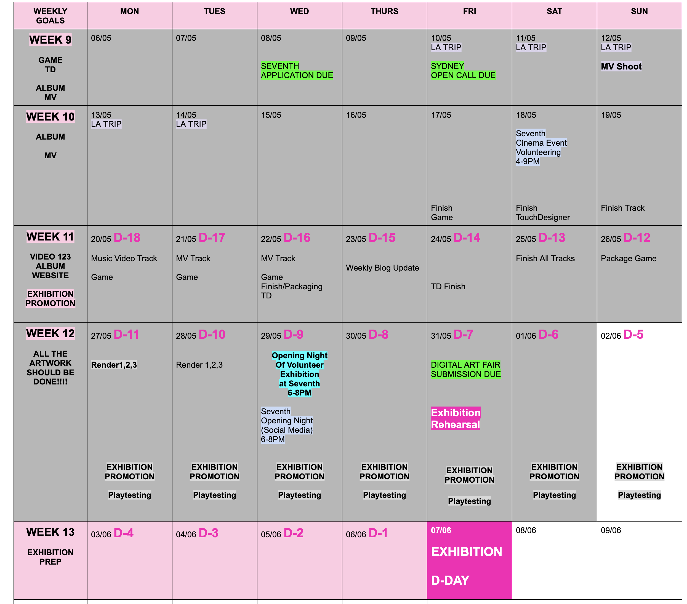
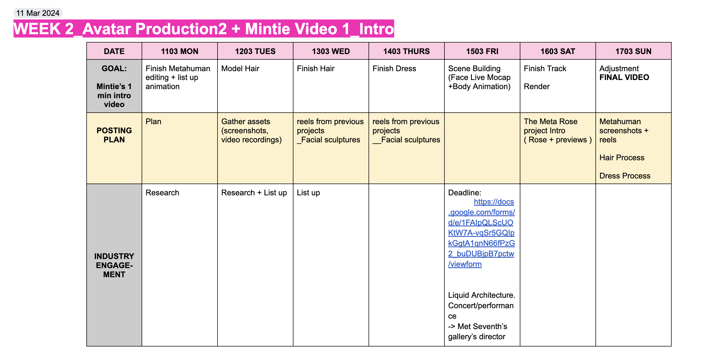

Exhibition
Reflections
Explain your how your time was used on this project in the various roles you needed to fulfil to see it to completion. This should include not only design work and asset development, but other skills such as project management, communications, etc.
Demonstrate and illustrate your explanation via examples, media documents, sketches, diagrams, recordings, or whatever format helps support proof of your contribution.
 
As an artist, curator, project manager, and communication manager of the solo exhibition, “The Meta Rose Project,” detailed timeline planning was the crucial foundation for delivering the project. Acknowledging its ambitious nature and the need for sufficient time, the timeline was set from the first week of the semester, and the proposal was sent as soon as possible to initiate the project quickly.
As the artist of the exhibition, production of the artworks was the fundamental aspect, and weekly goals were set around their production. At the beginning of each week, daily production goals were established according to the weekly timeline. Project management primarily involved constant planning for daily and weekly goals, often with the help of daily to-do lists. The original timeline was regularly compared with the weekly goals to ensure the project remained on track. Completing the weekly documentation also allowed for a comprehensive summary of the week's production progress. As the exhibition approached, a calendar was used to count down to the event, helping in keeping plans on schedule.
As the curator, ensuring all artworks adhered to unified design and aesthetics was essential in designing the exhibition. The floorplan was meticulously created to prioritise offering a quality experience to the audience, from the entrance to the exit of the exhibition. It was designed to facilitate effective and convenient interaction with various artworks.
In terms of promoting the exhibition, word of mouth played a pivotal role. Sharing the work-in-progress on Instagram aided in promotion, as many attendees mentioned seeing the process of particular artworks during the exhibition, which helped them relate to the artworks more effectively. Starting promotion early in the semester to invite friends and colleagues also helped gaining more attention from the audience.
Reflect on the effectiveness of your contribution. What specific challenges did you encounter in these various roles and how did you manage those challenges? What aspects of project development did you feel most comfortable with, which ones did you grow from the most, and which do you think could still use improvement going forward?
Time management was undeniably the key challenge throughout the entire project duration. Prior to commencing the project, it was already anticipated that maintaining the schedule would be challenging, so a backup plan was incorporated into the original schedule. According to the initial plan, the last artwork involved producing AR 3D roses. However, due to time constraints, this artwork was dropped from the list in accordance with the backup plan. Having a backup plan proved to be a wise decision because, despite falling behind the production schedule, there was a backup plan in place to realign the schedule. I intend to continue incorporating backup plans into timelines for future projects.
However, even with the backup plan, the project was undoubtedly ambitious given the short period of time available for completion. In hindsight, initiating the project several weeks earlier would have provided more time for the production of the artworks. While I anticipated encountering numerous troubleshooting issues throughout the process, the actual number exceeded my expectations for sure.
The most challenging part of all was getting the multiplayer system working so that the game could be presented as a multiplayer experience. Developing a game using Unreal Engine 5 was the first layer of pushing myself, but creating a multiplayer game added another level of complexity. Packaging and presenting the developed multiplayer game as such was definitely another challenge on top of everything else. I vividly remember a comment from the developer of the pixel streaming platform, Arcane Mirage, during our troubleshooting zoom meeting. He said, "What you are trying to do (implementing multiplayer) is the most challenging thing that you can do with games." I believe I underestimated the amount of troubleshooting and technical challenges involved in developing a multiplayer game. Initially, I only allocated a few weeks for the game, but now I understand the extensive effort required to develop a multiplayer game, which will inform more effective timeline planning in the future. Learning from this experience, I will be more considerate of timeline duration and ensure ample time for artwork production.
Another challenging aspect was keeping up with the posting schedule on Instagram. My original goal was to post 3 times a week. I managed to reach this goal most weeks, but there were a few where I could only manage a few posts. To ensure consistency, the plan was to utilise post scheduling applications or platforms to schedule posts for the week ahead. However, I ended up posting without any scheduling ahead. Posting according to the schedule was part of my weekly plan every week, but it was definitely challenging to keep up with the goal. For the next project, it would be much more consistent and convenient if I could schedule posts for the week a week prior, even if it means postponing the start of the schedule.
I felt most comfortable knowing that I, as the artist producing the work, would not have to worry about not receiving all the necessary artworks and materials by the deadlines. If I needed any information or assets for the exhibition, it was easier because I only had to rely on myself. Even though the schedule fell behind, I was not overly anxious about project delivery because I knew I would work hard to catch up. If I were relying on other artists, I would have considered that they also need rest, but since I was the artist, I could push myself to stay on schedule.
Discuss how you applied yourself independently to learn required techniques and solve design problems that you encountered during the process of creating your work.
The Meta Rose game was the first multiplayer game I developed, and I wasn't familiar with Unreal Engine 5 before this semester. However, I wanted to challenge myself by learning the software, especially because I aimed to create my digital twin, Mintie, utilising the MetaHuman in Unreal. To facilitate the production of the works, I created a separate list of tutorials for the artworks, including Unreal games, 3D character design, and 3D music videos. Additionally, I joined some Discord channels for troubleshooting and became involved with the community.
Whenever there were issues, particularly on the technical side, I actively sought help. This involved leaving comments on tutorial videos, joining Discord channels to ask questions, reaching out via email to the support team of the software or community, as well as scheduling meetings to resolve the issues. Actively seeking assistance and searching for answers definitely helped in solving the problems I encountered. Sometimes, it's surprising to discover what you can achieve simply by asking for help!
Analyse the trajectory of the project, and how that might have changed or developed throughout the term. In retrospect, what strategies and ideas proved most effective, and which strategies or ideas were not as useful or productive?
Finding the balance between having determination to fix the problems and achieving the goal, and compromising to proceed with the best alternative plan, was always key in troubleshooting this project. With the tight schedule and ambitious goals, it was a constant battle between the two. To find the balance, setting deadlines for troubleshooting was the most effective approach. For instance, the original plan was to package the game using pixel streaming, which would offer easier access via web browser. However, it required high complexity of the implementation process and when the set deadline was reached, I had to decide to proceed with the alternative option of downloading the game file to the computers.
I also found that sometimes it's more time-efficient to try and experiment to see if something works, rather than spending time researching how to do it or the best way to do it. For instance, I watched numerous tutorials on making 3D clothes and all the basic tutorials on the software, Clo3D and Marvellous Designer. However, I realised I learned much more about the actual process and the software itself with my first trial of making a simple garment. Conducting thorough research is crucial in various ways, but sometimes, just experimenting and trying out things can be more useful and productive as well!
Based on what you’ve learned throughout the term, describe how you might have modified the process to improve it based on factors that were within your control.
Due to the tight schedule, I believe I wasn't able to engage in more active promotion for the exhibition. Perhaps I could have placed posters around the campus a few weeks prior to the exhibition and increased my social media postings about it.
Additionally, I had wanted to print out the Meta Rose poster into small name card-sized papers as souvenirs for the audience. On the back side, there would be a blank line for them to write any positive words they wished, so they could carry it with them. If I had more time, I would have prepared this for the audience as a reminder of the exhibition and of positivity.
It would have been better if I had been more active in encouraging them to provide feedback! Although I did print out the QR code to the feedback session separately and placed them next to the instructions, perhaps it was a little dark, even with the lights on the desks. It would have been better if I had a reading lamp or a small lamp for each instruction, or at least one at each table, to make it easier to read the printed instructions.
Overall, it would have definitely been better if I had allowed more time in general for the entire project so I wouldn’t have had to miss all these details!
How will you continue to develop your career profile based on the work completed during the term, and what are your strategies going forward in your professional life based on the experience of completing this project?
The Meta Rose Project made its debut with the exhibition, but I will continue to further develop the works.
For the game, I plan to add more interactive objects and refine small details, such as applying different colours for the shooting effects of the two types of roses, destroying the roses once they run out of bullets, and integrating ChatGPT into NPCs. Once completed, it will be released via Steam since it's currently utilising Steam's online system.
Regarding the TouchDesigner interactive piece, the plan is to design more effects and build it as a template for interactive pieces. I aim to continue developing audio-visual interactivity triggered by touch. While I used roses this time, it could involve other objects or visual sources for the piece. Interactivity is a key aspect of my practice, so I will create different variations of this meta rose touch.
The EP album will be released after completing another round of mixing and mastering.
The website will become the archive for the project, and the link will be added to Instagram as well as the portfolio website.
As for Mintie, I will definitely continue with her in my career for a while. She is my digital twin. Although I didn't get to utilise body animation and Livelink for facial animation simultaneously this time, I want to experiment with them in the next project. I will keep updating her clothes, hair, and perhaps facial textures or makeup for future projects. I'm excited to see what she will do in future projects!
With the Meta Rose Project, I will now seek opportunities to exhibit the artworks in other galleries. I will begin pitching the project for exhibition opportunities!
Overall,
With the major project on the Meta Rose Project, I think the biggest lesson I've learned is the importance of continuously producing, creating, and designing artworks as an artist, and really challenging myself with projects to always learn and grow to improve. I think I can now clearly understand what it means to be an artist: Artists create art. They speak with their works. The works represent the artists. Additionally, while continuing to produce works, I also realised once again that I have to actively seek opportunities for the works to be seen and heard.
The primary goal of the major project was to build a strong foundational work as a 3D artist and musician. After completing the exhibition and the project and looking back, I think I can proudly say that the Meta Rose Project has definitely established a great foundation for my career, especially with the production of the digital twin, Mintie.
My biggest inspiration in developing a digital twin came from Serwah Attafuah and her beautiful Afro-futuristic representation of herself. When I researched her work last year, I was struck by how much it contributed to building a strong, distinct artistic style for her. It was incredibly inspiring for me to create my own representation. I'm thrilled and excited that now I also have Mintie as my digital representation, where I feel like there are no limits to where she can go and what she can do, transcending the boundaries of physicality.
I think I really pushed myself with this project in various ways, including a tight production schedule, learning new software, as well as troubleshooting, and I was committed and worked hard for the project, which I am proud of.
I also felt really grateful for how the major project group helped each other and supported each other so much during the three days of exhibitions. I felt really grateful to have such strong support for each other. Even though we had separate exhibitions, we all were a great team indeed!